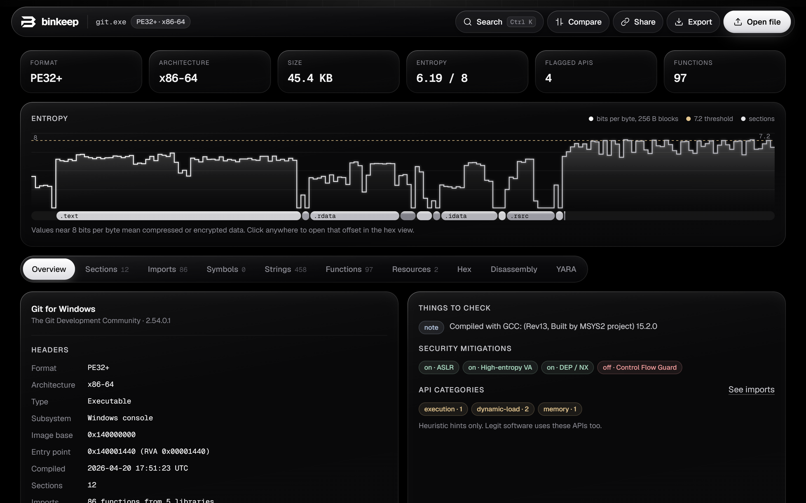
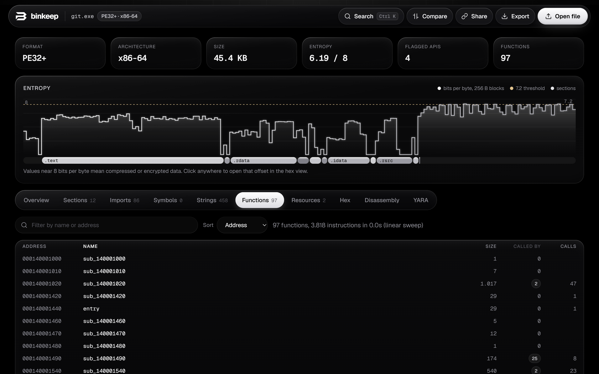
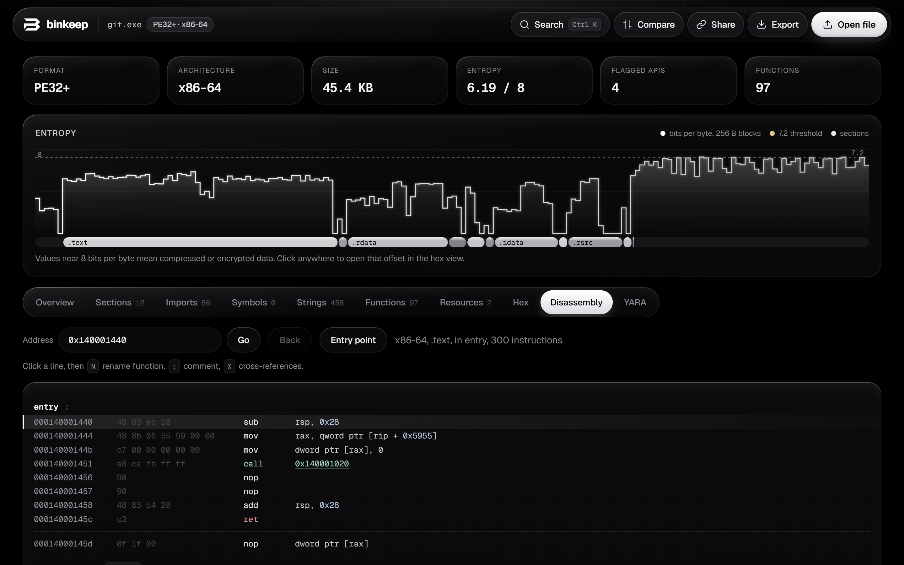

How to analyze an EXE, DLL, ELF or Mach-O file in the browser
binkeep is a free reverse engineering tool that runs in a browser tab. This guide walks through a first look at an unknown binary: what it is, what it imports, where its code is, and whether anything about it looks off. Nothing you open is uploaded, and the app keeps working offline.
1. Open a file
Go to the app and drop a file on the page, or click Open file. Any file works. Executables get the full analysis, and everything else still gets hex, strings, entropy and YARA. Files up to 512 MB are supported.
The file is read with the browser's File API and parsed in the page. There is no server side: the app is a set of static files, and after the first visit it is cached so it opens without a network connection. You can also install it as an app from the browser menu.
2. Supported formats
- Windows PE: PE32 and PE32+ executables, DLLs and drivers (.exe, .dll, .sys), including .NET assemblies.
- Linux ELF: 32 and 64 bit, little and big endian (executables, .so libraries, object files).
- macOS and iOS Mach-O: 32 and 64 bit, plus universal (fat) binaries. For a universal binary, the arm64 slice is analyzed first, then x86_64.
The disassembler supports x86, x64, ARM and ARM64.
3. Read the overview

The top row shows the format, architecture, size, overall entropy, the number of flagged API imports and the number of functions found.
The entropy graph plots how random each block of the file is, with section bands underneath. Normal code sits around 5 to 6.5 bits per byte. Long stretches near 8 usually mean compressed or encrypted data, which is common in packed malware, installers and embedded resources. Click anywhere on the graph to open that offset in the hex view.
Headers list the entry point, image base, compile time, subsystem, linked libraries and, for Mach-O, the platform and SDK. Things to check collects anything unusual, such as an entry point in a non-executable or unexpected section, or a section that is both writable and executable. A compile time in the future is noted next to the timestamp; it usually means a reproducible build.
Security mitigations show which protections the binary was built with: ASLR, DEP and Control Flow Guard for PE; PIE, NX, RELRO, stack canaries and FORTIFY for ELF; PIE, stack canaries, ARC and the hardened runtime for Mach-O.
4. Imports, symbols and strings
The Imports tab lists every library and function the binary links against. Functions used by common techniques are tagged by category, for example process injection, anti-debugging, networking, cryptography and persistence. These are hints: legitimate software calls the same APIs. After code analysis, each import shows how many places in the code call it, and Called by code hides imports that are never used.
Symbols lists exports and, for ELF and Mach-O, the symbol table. Strings extracts ASCII and UTF-16 strings, sorts URLs, IP addresses, file paths, registry keys and module names into categories, and accepts a regular expression filter. Referenced by code keeps only the strings that some instruction actually points to, which removes most of the noise.
For PE files, the Resources tab shows version info, the manifest (including the requested execution level, such as requireAdministrator), the application icon and any resource that starts with an executable or archive header. Droppers often hide a second payload there.
5. Functions and cross-references

binkeep finds functions with a linear sweep over the code sections, combined with the function tables the format provides: .pdata on x64 Windows, LC_FUNCTION_STARTS on Mach-O, exports, symbols and the entry point. Files with up to 8 MB of code are analyzed automatically; for larger ones, press Analyze code in the Functions tab.
Every call, jump, data reference and import use becomes a cross-reference (xref). The function list shows how many places call each function and how many calls it makes, and you can sort it by address, number of callers, size or name. Click the xref count anywhere in the app to see where something is used.
6. Disassembly

The disassembler is Capstone compiled to WebAssembly. Calls through the import table are named (for example call CreateRemoteThread), string references show the string inline, and branch targets are links you can follow. Back returns to where you were.
Type an address or a function name in the address box and press Go. Click a line to select it, then press N to rename the function, ; to add a comment, or X to list cross-references. Names and comments are saved in your browser for that exact file (by its SHA-256) and appear everywhere in the app.
7. YARA rules
The YARA tab runs real libyara, compiled to WebAssembly, with the pe, elf and math modules. Write or paste rules, or load a .yar file, then press Run rules or Ctrl + Enter. Matches show the rule metadata and each matched string with its offset; click an offset to jump to it in the hex view.
Your rules are kept in the browser and run automatically on every file you open, so a personal rule set works like a quick scanner.
import "pe"
rule suspicious_injection
{
meta:
description = "Imports used for classic remote thread injection"
condition:
pe.imports("kernel32.dll", "VirtualAllocEx") and
pe.imports("kernel32.dll", "WriteProcessMemory") and
pe.imports("kernel32.dll", "CreateRemoteThread")
}Rules that use the pe, elf or math module need the matching import line at the top.
8. Packers and signatures
The Packing card names known packers and protectors, such as UPX, Themida, VMProtect, ASPack, MPRESS, PECompact, Enigma and common .NET obfuscators, from section names and byte signatures. When there is no known signature, heuristics still flag high code entropy, very few imports or an entry point in an unusual place. A packed file mostly shows its unpacking stub, so the rest of the report should be read with that in mind.
The Signature card parses Authenticode on PE files: signer, issuer, validity dates and timestamp. binkeep recomputes the file's digest and compares it with the signed one, so you can see whether the file was modified after signing. The certificate chain itself is not checked against a trust store. For Mach-O files, it shows the code signature identifier, team ID, whether it is ad-hoc signed, and whether the hardened runtime is on.
9. Compare two builds
With a file open, press Compare and pick a second file. The Compare tab lists the headers, mitigations, sections, imports, exports and strings that changed between them. It is useful for patch diffing at a glance, or for checking how a sample differs from a known clean version.
11. Keyboard shortcuts
| Ctrl + K or / | Search functions, imports, symbols, strings, addresses and actions |
| G | Go to an address |
| N | Rename the selected function (disassembly) |
| ; | Comment the selected line (disassembly) |
| X | Cross-references to the selected line or function |
| Ctrl + Enter | Run YARA rules |
On macOS, use Cmd instead of Ctrl.
12. FAQ
Is my file uploaded anywhere?
No. Parsing, hashing, disassembly and YARA all run inside the page. The only network requests are the app's own files and its fonts, and the site's security policy blocks the page from sending data anywhere else.
Is it safe to open malware with binkeep?
binkeep only reads the bytes of the file; it never runs it. Still, handle live samples the way you normally would, ideally in a virtual machine, and keep them out of folders that sync to the cloud.
Does it replace Ghidra or IDA?
No. It has a control flow graph for any function and a decompiler is planned, but binkeep is for the first few minutes with a binary: triage, quick checks and deciding whether it deserves a deeper look in a full disassembler.
How accurate is function detection?
It is a linear sweep, so data inside code sections can be misread as instructions, and functions only reached through pointers can be missed. The format's own function tables (.pdata, LC_FUNCTION_STARTS, symbols) make it much more complete when they are present.
Does it cost anything?
No. binkeep is free and open source under the MIT license. The code is on GitHub.